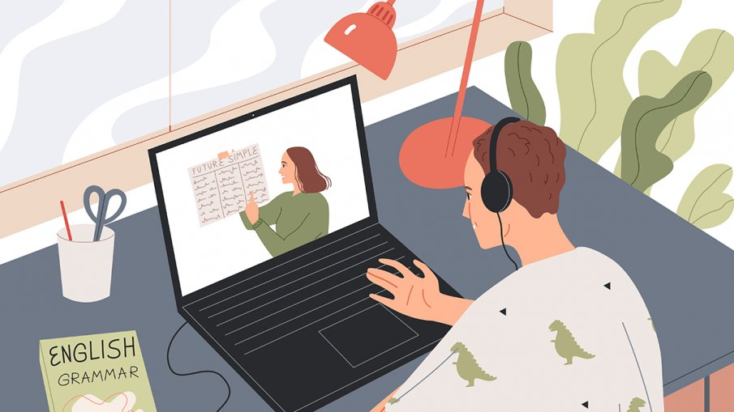

Året 2020 tog en rejäl vändning. Hela världen drabbades av en pandemi som ingen var beredd på. Skolelever, främst från gymnasiet, blev hemskickade och behövde plötsligt studera hemifrån.
Att ha en självdisciplin blev plötsligt ett krav och tempot blev extremt högt. Distansundervisningen blev en stressig period för många och dessutom växte psykisk ohälsa sig starkare hos eleverna.
Press, stress och ångest är några ord som kan beskriva förra vårterminen. Lärare tog för givet att alla elever skulle kunna hantera situationen lika, men så var inte fallet.
Bara för att man plötsligt studerade hemifrån, innebar det inte att man hade all tid i världen.
Distansundervisningen var ingen praktfull tid för många och jag anser att situationen skulle ha hanterats bättre av landets skolor.
Hela samhället behövde anpassa sig utefter pandemin. Allt fler människor studerade och jobbade hemifrån.
I vissa fall var en hel familj hemma samtidigt, 7 dagar i veckan.
Jämställdhetsmyndigheten i Sverige gjorde en studie på om våldet i hemmet mot kvinnor och barn ökade under pandemin, studien visade att det skett en procentuell ökning.
Därmed kan allt fler barn och ungdomar blivit utnyttjade och misshandlade nu när fler familjer befunnit sig hemma.
Annars brukar kanske skolan vara en räddning från hemskheterna?

STRESS OCH ÅNGEST
Dag efter dag under förra våren satt jag framför en upplyst dator med en klump i magen. Stressen med att inte veta hur många inlämningar som väntades var jobbig.
Det var inte rimligt att få fler läxor och inlämningar än vad vi tidigare fått under fysisk undervisning. Alla elever hade inte en självdisciplin eller lika lätt att planera upp sitt arbete.
Folkhälsomyndigheten i Sverige gjorde en studie om hur eleverna påverkades av att ha distansundervisning. Studien visade att stress och ångest växte enormt mycket hos eleverna eftersom betygshetsen är enorm bland dagens ungdomar.
Man måste ha bästa betygen för att lyckas senare i livet. Ska ens framtid förstöras eftersom lärarna inte kunde planera?
...Elever som annars hade extra stöd i skolan hade inte längre den möjligheten. Plötsligt var man tvungen att ta hand om sig själv och klara allt på egen hand.
Det kändes som att lärarna glömde bort för en stund att alla elever var olika. För att få närvaro var man tvungen att skriva flersidiga texter och svara på ett tiotal instuderingsfrågor under någon enstaka timme.
Viljan att prestera bra resulterade i att jag ibland låg ner på sovrumsgolvet och hade panik. Vad var det för fel med ett enkelt upprop som närvarokoll?
Många människor kände däremot att distansundervisningen blev en räddning i vardagen. Människor som annars känt sig obekväma eller mobbade i skolan, kan ha föredragit distansundervisningen.
Att undgå den vardagliga pendlingen blev också en fördel för många. De elever som vanligtvis pendlade långt hade inte något emot att studera hemifrån, utan uppskattade istället sovmorgnarna.
Jag förstår att politikerna och lärarna runt om i landet försökte göra det bästa av situationen angående pandemin, dock hanterade inte alla elever distansundervisningen på samma sätt.
Det är svårt att diskutera om distansundervisningen var bra eller dålig eftersom alla människor är olika och har haft olika förutsättningar.
Distansundervisningen har haft sina fördelar, men det som gör mig mest irriterad är lärarnas attityd och hur de tog för givet att alla hade mer fritid.
Alla människor är olika, det är på tiden att vi börjar acceptera det!